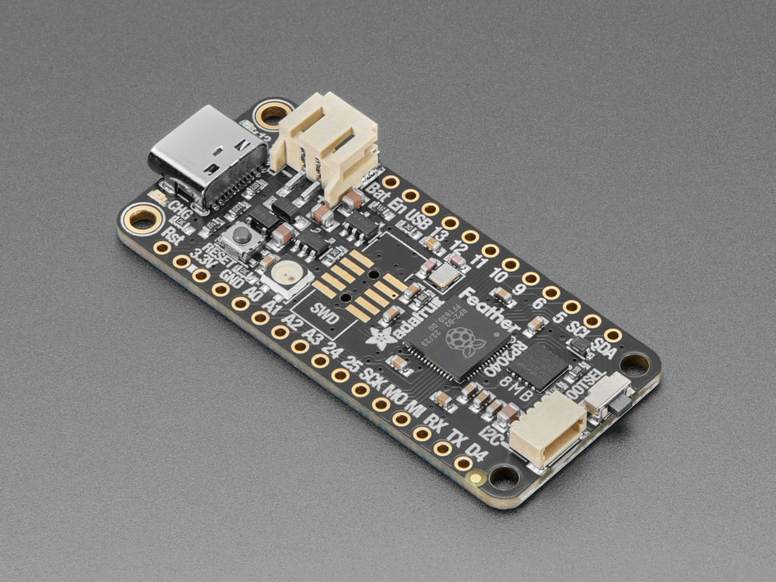
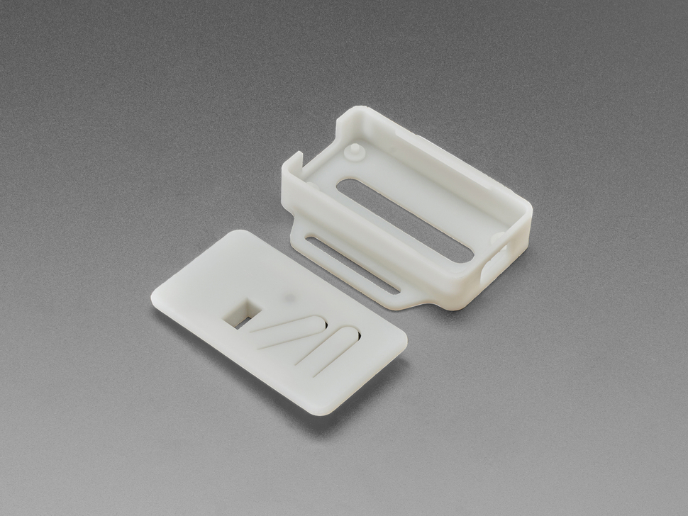
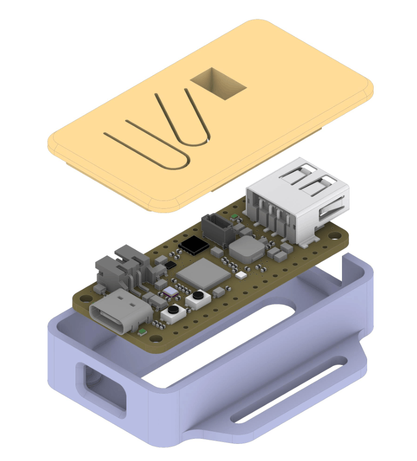
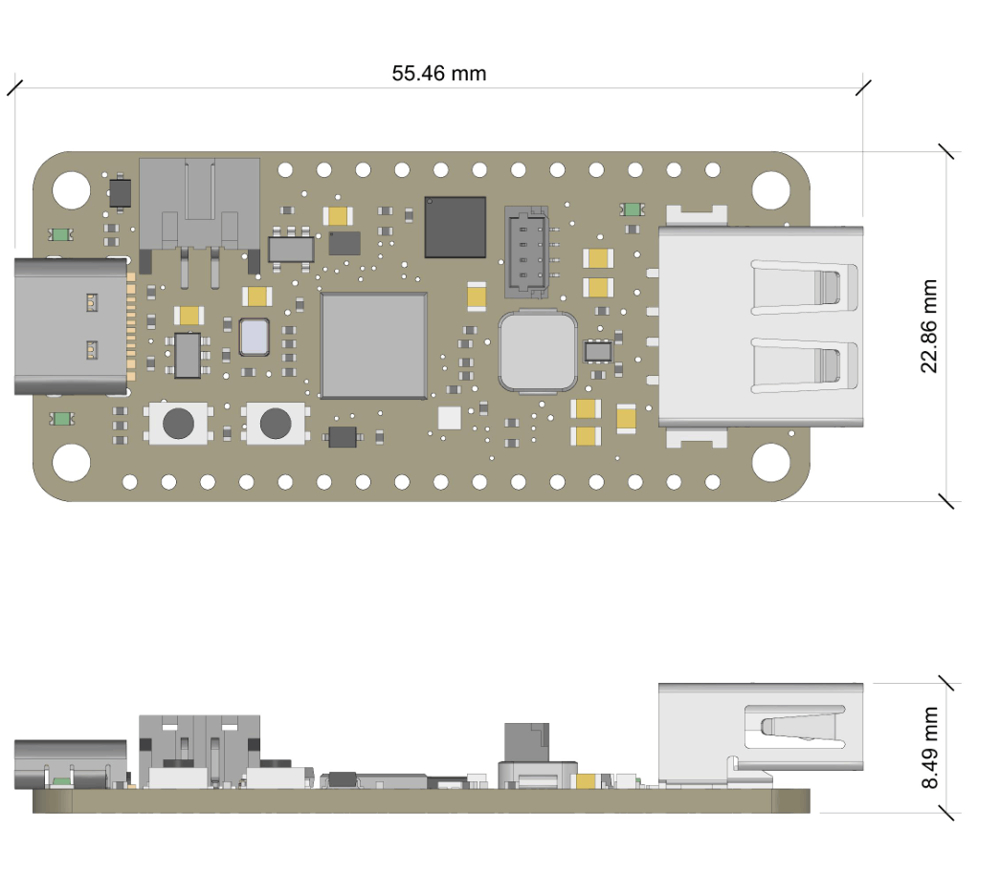

Public cone-beam CT benchmark
RP2040-PCB-CBCT Dataset
A newly constructed cone-beam CT dataset for plastic-metal beam-hardening correction, scanned from an Adafruit RP2040 PCB enclosed in a plastic case using a North Star Imaging 1420-DR system.

Overview
Built for plastic-metal beam-hardening correction
The scanned object combines low-density plastic with multiple dense metallic components, producing severe streaking, shading, and material-dependent beam-hardening artifacts that are representative of practical industrial inspection problems.
- Object
- Adafruit RP2040 PCB in plastic case
- System
- North Star Imaging 1420-DR
- Modality
- Cone-beam CT
- Use Case
- Metal artifact reduction and beam-hardening correction
Physical object
Adafruit RP2040 board and snap-on enclosure


Object geometry
Packaged RP2040 board and PCB layout


Scan sets
Six acquisitions across orientation and view count
Horizontal
600 views
Horizontal_Elec_Board_600.tgz
Horizontal
1200 views
Horizontal_Elec_Board_1200.tgz
Horizontal
1800 views
Horizontal_Elec_Board_1800.tgz
Vertical
600 views
Vertical_Elec_Board_600.tgz
Vertical
1200 views
Vertical_Elec_Board_1200.tgz
Vertical
1800 views
Vertical_Elec_Board_1800.tgz
The two orientations provide complementary measurement geometries and support robustness evaluation under different metal-ray interaction patterns.
Acquisition
Representative NSI project settings
| Scan Type | Cone-beam CT |
|---|---|
| CT System | NSI 1420-DR |
| Voltage | 190 kV |
| Current | 200 microampere |
| X-ray Filter | 1.2 mm Sn filter |
| Source-Object Distance | 173.38 mm |
| Source-Detector Distance | 400 mm |
| Magnification | 2.37 |
| Detector Pixel Pitch | 0.127 x 0.127 mm |
| Detector Array Size | 1536 x 1920 |
| Views per Scan | 600, 1200, or 1800 |
| Rotation Range | 360 degrees |
| Exposure Time | 266.67 ms (3.75 fps) |
| Reconstruction Voxel Size | 53.48 um |
Resources
Additional files
Preprocessing
MBIRJAX preprocessing
We provide well-developed NSI preprocessing code through the MBIRJAX Python package, which connects the released NSI scan data to raw data preprocessing, plastic-metal beam-hardening correction, and reconstruction.
MBIRJAX toolkit
MBIRJAX is a JAX-based model-based iterative reconstruction package used here for NSI cone-beam CT preprocessing, FDK reconstruction, MBIR reconstruction, and plastic-metal beam-hardening correction experiments. Installation instructions and package documentation are available in the MBIRJAX documentations.
Preprocessing example
The script below demonstrates the NSI dataset preprocessing path with MBIRJAX: download/extract an NSI scan, compute the sinogram and geometry parameters, crop the cone-beam sinogram (optional), initialize the model, generate transmission weights, and run FDK/MBIR/IPMR reconstructions. The following example assumes that the dataset has already been downloaded and extracted locally. Set `dataset_dir` to the extracted NSI dataset directory before running the script.
import os
import numpy as np
import mbirjax as mj
import mbirjax.preprocess as mjp
# ============================================================
# User-configurable settings
# ============================================================
# Path to the downloaded and extracted dataset directory.
# This directory should contain the NSI scan files.
dataset_dir = "./demo_data/Horizontal_Elec_Board_1800"
# NSI preprocessing parameters
downsample_factor = [2, 2] # [detector_row_downsample, detector_channel_downsample]
subsample_view_factor = 2 # Use every N-th projection view
# Reconstruction parameters
sharpness = 1.0
positivity_flag = True
verbose = 1
# Weighting model for MBIR reconstruction
weight_type = "transmission_root"
# Plastic-metal beam-hardening correction parameters
num_BH_iterations = 3
num_metal = 2
num_constraint_update_iter = 15
polynomial_order = 3
# Regularization / model parameters for plastic-metal correction
alpha = 1.0
beta = 0.002
gamma = 0.1
# ============================================================
# Step 1: Load NSI data and compute the cone-beam geometry
# ============================================================
sino, cone_beam_params, optional_params = mjp.nsi.compute_sino_and_params(
dataset_dir,
downsample_factor=downsample_factor,
subsample_view_factor=subsample_view_factor)
# ============================================================
# Step 2: Automatically crop the sinogram (optional)
# ============================================================
sino, cone_beam_params, optional_params = mjp.auto_crop_sino_conebeam(
sino,
cone_beam_params,
optional_params)
# Enforce nonnegative line-integral values after preprocessing.
sino = np.maximum(sino, 0)
# ============================================================
# Step 3: Initialize the cone-beam CT model
# ============================================================
ct_model = mj.ConeBeamModel(**cone_beam_params)
# Set additional geometry and reconstruction parameters.
ct_model.set_params(**optional_params)
ct_model.set_params(
sharpness=sharpness,
verbose=verbose,
positivity_flag=positivity_flag)
# ============================================================
# Step 4: Generate statistical weights
# ============================================================
weights = ct_model.gen_weights(
sino,
weight_type=weight_type)
# ============================================================
# Step 5: Compute an FDK reconstruction
# ============================================================
fdk_recon = ct_model.direct_recon(sino)
# ============================================================
# Step 6: Compute an MBIR reconstruction
# ============================================================
mbir_recon, recon_params = ct_model.split_sino_recon(
sino=sino,
weights=weights)
# ============================================================
# Step 7: Compute a plastic-metal beam-hardening corrected reconstruction
# ============================================================
plastic_metal_recon = mjp.recon_plastic_metal(
ct_model,
sino=sino,
weights=weights,
num_BH_iterations=num_BH_iterations,
num_metal=num_metal,
num_constraint_update_iter=num_constraint_update_iter,
order=polynomial_order,
verbose=verbose,
alpha=alpha,
beta=beta,
gamma=gamma)Citation
How to cite
Please cite the RP2040-PCB-CBCT dataset and the Adafruit RP2040 board reference when using this benchmark.
@misc{rp2040_pcb_cbct_dataset,
author = {Li, Ziyun and Yang, Mingqi and Sharma, Vijay Kumar and Toaquiza, John D. and Eshraghi, Javad and Buzzard, Gregery T. and Bouman, Charles A.},
title = {{RP2040-PCB-CBCT}: Cone-Beam CT Dataset for Plastic-Metal Beam-Hardening Correction},
year = {2026},
howpublished = {\url{https://www.datadepot.rcac.purdue.edu/bouman/elec_board}},
}
}